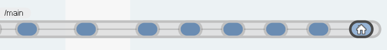

The goal of this lab is learning vocabulary. The communication will be easier if all of us talk using the same words.
These are the few concepts you will need to know:
Repository
It is a data structure will normally contain a project.
Figure 1: Repository
Workspace
It is just a directory where your sources are.
Figure 1: Workspace
Item
Items are the content of your workspace: files and directories.
Figure 3: Item
Branch
A branch is a place in the repository where you are working on. You can create new ones, switch to them, compare their content, merge them, replicate them, and much more.

Figure 4: Branch
Changeset
Changeset is the individual check-in you have created.
Figure 5: Changeset
Label
Label is a name to the current revision.
Figure 6: Label